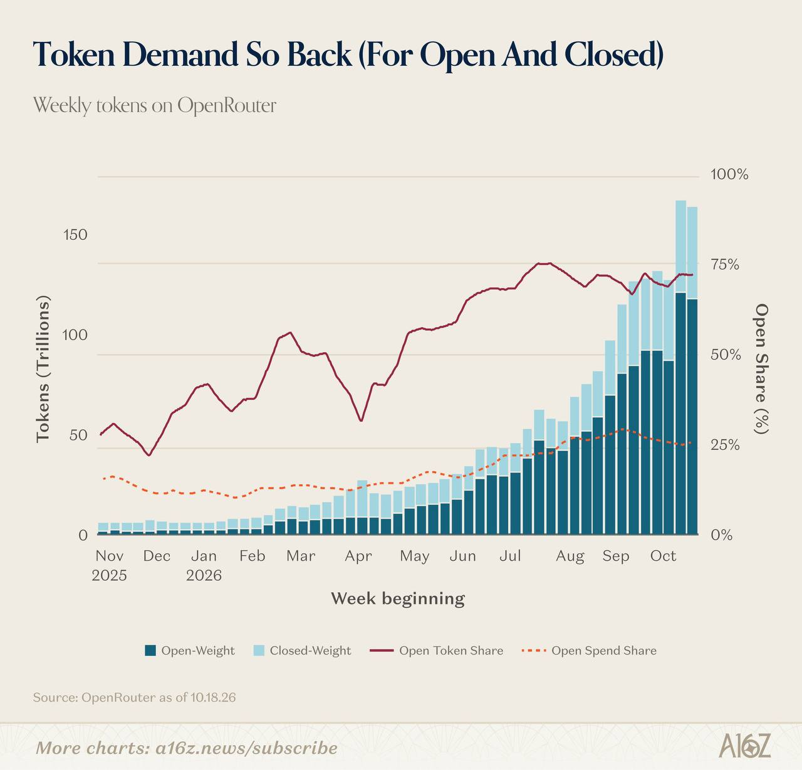

過去 26 小時只有 1 則貼文（#6507），是一張沒有附文字的 a16z 圖表，主題是 OpenRouter 上每週 AI token 用量，以及開源權重模型的占比。因為貼文本身沒有文字，下面的講解只根據圖上的資訊，主講沒有寫出來的觀點不做推測。
（無文字，僅一張圖片）

圖片是 a16z 的圖表，標題「Token Demand So Back (For Open And Closed)」，副標「Weekly tokens on OpenRouter」，資料截至 2026/10/18。長條圖是每週 token 數（兆），分成 Open-Weight（深藍）與 Closed-Weight（淺藍）；實線是開源模型的 token 占比，虛線是開源模型的花費占比。最新幾週總量約 160–165 兆，其中開源約 120 兆；開源 token 占比約 72%，花費占比卻只有約 25%。
OpenRouter 是什麼：它是一個 API 聚合平台，開發者用同一組介面就能呼叫 OpenAI、Anthropic、Google，以及 DeepSeek、Qwen 等開源模型，按 token 計費。它的流量可以當成觀察「開發者實際在用什麼模型」的窗口，但只是整個市場的一部分：大企業多半直接向原廠或雲端（Azure、Bedrock、Vertex）採購，這些用量看不到，所以不能直接等同全市場。
圖上的三個重點：
投資上的意涵（屬一般性解讀，非主講觀點）：不論開源或閉源，token 總量都在暴增，背後的 GPU、記憶體、網通與電力的推論算力需求是共同受惠的一端；但模型端的定價壓力很大，「量大」不等於「賺錢」。看到這類圖時，要分清楚這是 token 數還是營收，也要注意 OpenRouter 的樣本偏向成本敏感的開發者，開源占比可能高於整體市場。
查證限制：這次沒有找到 a16z 這張圖的原文，數字是直接從圖上讀出來的估計值；一年內放大二十倍以上，是用圖上起點與終點的長條高度約略換算的。